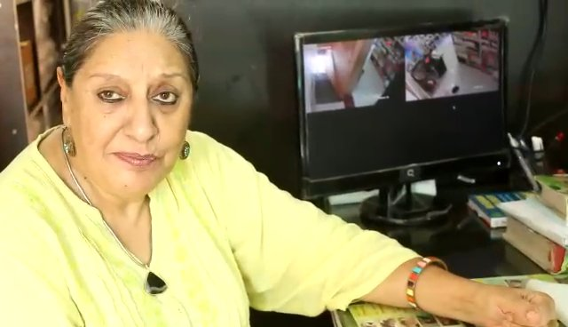
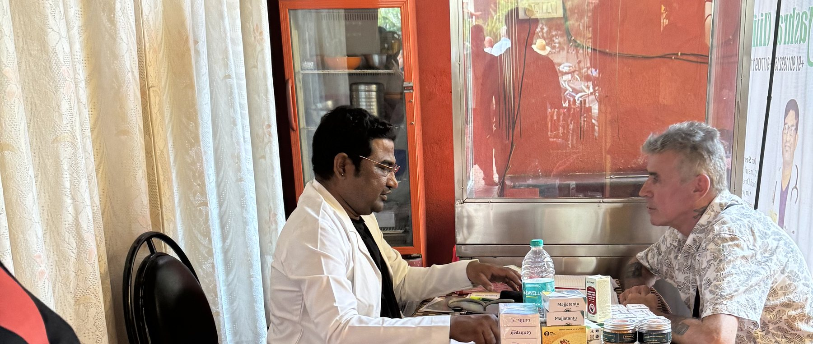

Yashraj Ayu
The new Panchakarma & Ayurvedic wellness venture from the family behind Yashraj Clinic. Classical healing, authentic detox therapies and doctor-led care — rooted in 15+ years of practice.
A new venture by Dr. Raju Bhusanar, B.A.M.S — Calangute, Goa
Care rooted in Ayurveda
Yashraj Ayu is the new Panchakarma and Ayurvedic wellness home of the family behind Yashraj Clinic, Calangute — trusted by patients from Goa and around the world since 2018. Healing here follows the classical path: understand the root, restore the balance, and let the body do what it knows best.
From authentic five-action Panchakarma to everyday consultations, yoga and physiotherapy — every therapy at Yashraj Ayu is doctor-led and built around you.
We treat the root cause, not just the symptom — body, mind and daily routine together.
Classical Panchakarma, genuine formulations and time-tested methods, practised with discipline.
Every plan begins with your Prakriti and your story. No two healings are alike.
A little guidance.
A clear way forward.
Explore our care, hear from our clients, or plan your first visit.

Our therapies
Ayurvedic consultation, Panchakarma, yoga and rehabilitation.
Explore therapies ↗
Client experiences
Seven personal video stories from people who visited the clinic.
Watch their stories ↗
Plan your visit
Find the Calangute clinic, get directions and contact our team.
Visit us ↗Start with a conversation.
Book a consultation with Dr. Raju Bhusanar and the Yashraj Ayu team — in clinic or online.